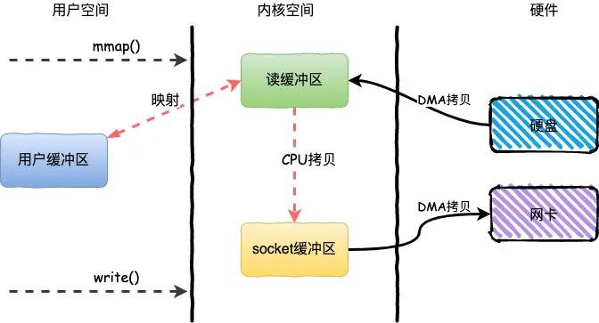
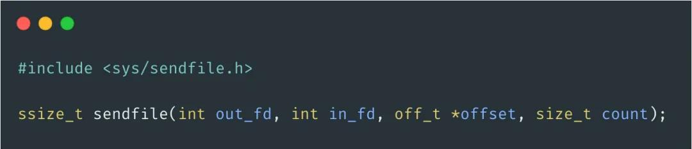
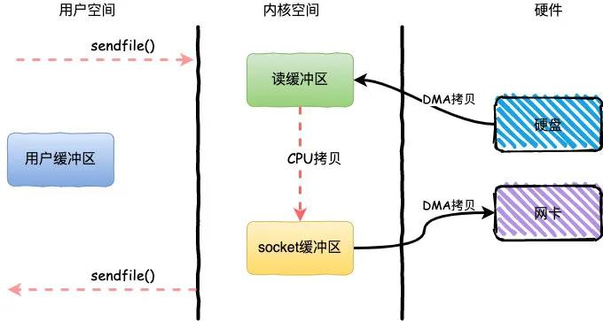
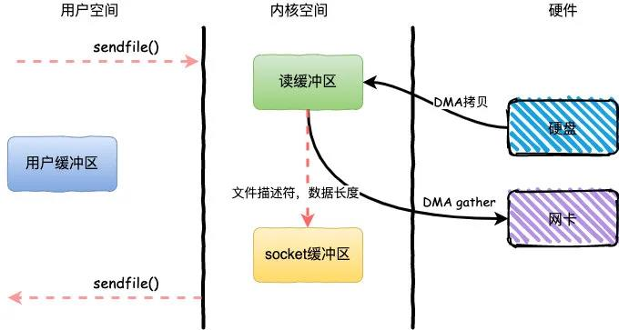

【转】mmap 和零拷贝
平时在面试中你肯定会经常碰见的问题就是：RocketMQ 为什么快？Kafka 为什么快？什么是 mmap？
这一类的问题都逃不过的一个点就是 零拷贝，虽然还有一些其他的原因，但是今天我们的话题主要就是零拷贝。
传统 IO
在开始谈零拷贝之前，首先要对传统的 IO 方式有一个概念。基于传统的 IO 方式，底层实际上通过调用 read() 和 write() 来实现。
通过 read() 把数据从硬盘读取到内核缓冲区，再复制到用户缓冲区；然后再通过 write() 写入到 socket 缓冲区，最后写入网卡设备。

整个过程发生了 4 次用户态和内核态的上下文切换和 4 次拷贝，具体流程如下：
- 用户进程通过
read()方法向操作系统发起调用，此时上下文从用户态转向内核态 - DMA 控制器把数据从硬盘中拷贝到读缓冲区
- CPU 把读缓冲区数据拷贝到应用缓冲区，上下文从内核态转为用户态，
read()返回 - 用户进程通过
write()方法发起调用，上下文从用户态转为内核态 - CPU 将应用缓冲区中数据拷贝到 socket 缓冲区
- DMA 控制器把数据从 socket 缓冲区拷贝到网卡，上下文从内核态切换回用户态，
write()返回

那么，这里指的 用户态、内核态 指的是什么？上下文切换 又是什么？
简单来说，用户空间 指的就是用户进程的运行空间，内核空间 就是内核的运行空间。如果进程运行在内核空间就是内核态，运行在用户空间就是用户态。为了安全起见，他们之间是互相隔离的，而在用户态和内核态之间的上下文切换也是比较耗时的。从上面我们可以看到，一次简单的 IO 过程产生了 4 次上下文切换，这个无疑在高并发场景下会对性能产生较大的影响。
那么什么又是 DMA 拷贝呢？
因为对于一个 IO 操作而言，都是通过 CPU 发出对应的指令来完成，但是相比 CPU 来说，IO 的速度太慢了，CPU 有大量的时间处于等待 IO 的状态。因此就产生了 DMA（Direct Memory Access）直接内存访问技术，本质上来说他就是一块主板上独立的芯片，通过它来进行内存和 IO 设备的数据传输，从而减少 CPU 的等待时间。但是无论谁来拷贝，频繁的拷贝耗时也是对性能的影响。
零拷贝 是指计算机执行操作时，CPU 不需要先将数据从某处内存复制到另一个特定区域，这种技术通常用于通过网络传输文件时节省 CPU 周期和内存带宽。那么对于零拷贝而言，并非真的是完全没有数据拷贝的过程，只不过是减少用户态和内核态的切换次数以及 CPU 拷贝的次数。
这里，仅仅有针对性的来谈谈几种常见的零拷贝技术。
mmap + write
mmap + write 简单来说就是使用 mmap 替换了 read + write 中的 read 操作，减少了一次 CPU 的拷贝。
mmap 主要实现方式是将读缓冲区的地址和用户缓冲区的地址进行映射，内核缓冲区和应用缓冲区共享，从而减少了从读缓冲区到用户缓冲区的一次 CPU 拷贝。

整个过程发生了 4 次用户态和内核态的上下文切换和 3 次拷贝，具体流程如下：
- 用户进程通过
mmap向操作系统发起调用，上下文从用户态转向内核态 - DMA 控制器把数据从硬盘中拷贝到读缓冲区
- 上下文从内核态转为用户态，
mmap调用返回 - 用户进程通过
write()方法发起调用，上下文从用户态转为内核态 - CPU 将读缓冲区中数据拷贝到 socket 缓冲区
- DMA 控制器把数据从 socket 缓冲区拷贝到网卡，上下文从内核态切换回用户态，
write()返回
mmap 的方式节省了一次 CPU 拷贝，同时由于用户进程中的内存是虚拟的，只是映射到内核的读缓冲区，所以可以节省一半的内存空间，比较适合大文件的传输。
sendfile
相比 mmap 来说，sendfile 同样减少了一次 CPU 拷贝，而且还减少了 2 次上下文切换。

sendfile 是 Linux 2.1 内核版本后引入的一个系统调用函数，通过使用 sendfile 数据可以直接在内核空间进行传输，因此避免了用户空间和内核空间的拷贝，同时由于使用 sendfile 替代了 read + write 从而节省了一次系统调用，也就是 2 次上下文切换。

整个过程发生了 2 次用户态和内核态的上下文切换和 3 次拷贝，具体流程如下：
- 用户进程通过
sendfile()方法向操作系统发起调用，上下文从用户态转向内核态 - DMA 控制器把数据从硬盘中拷贝到读缓冲区
- CPU 将读缓冲区中数据拷贝到 socket 缓冲区
- DMA 控制器把数据从 socket 缓冲区拷贝到网卡，上下文从内核态切换回用户态，
sendfile调用返回 sendfile方法 IO 数据对用户空间完全不可见，所以只能适用于完全不需要用户空间处理的情况，比如静态文件服务器。
sendfile + DMA Scatter/Gather
Linux 2.4 内核版本之后对 sendfile 做了进一步优化，通过引入新的硬件支持，这个方式叫做 DMA Scatter/Gather。它将读缓冲区中的数据描述信息（内存地址和偏移量）记录到 socket 缓冲区，由 DMA 根据这些将数据从读缓冲区拷贝到网卡，相比之前版本减少了一次 CPU 拷贝的过程

整个过程发生了 2 次用户态和内核态的上下文切换和 2 次拷贝，其中更重要的是完全没有 CPU 拷贝，具体流程如下：
- 用户进程通过
sendfile()方法向操作系统发起调用，上下文从用户态转向内核态 - DMA 控制器利用 scatter 把数据从硬盘中拷贝到读缓冲区离散存储
- CPU 把读缓冲区中的文件描述符和数据长度发送到 socket 缓冲区
- DMA 控制器根据文件描述符和数据长度，使用 scatter/gather 把数据从内核缓冲区拷贝到网卡
sendfile()调用返回，上下文从内核态切换回用户态
DMA gather 和 sendfile 一样数据对用户空间不可见，而且需要硬件支持，同时输入文件描述符只能是文件，但是过程中完全没有 CPU 拷贝过程，极大提升了性能。
应用场景
对于文章开头说的两个场景：RocketMQ 和 Kafka 都使用到了零拷贝的技术。
对于 MQ 而言，无非就是生产者发送数据到 MQ 然后持久化到磁盘，之后消费者从 MQ 读取数据。
对于 RocketMQ 来说这两个步骤使用的是 mmap + write，而 Kafka 则是使用 mmap + write 持久化数据，发送数据使用 sendfile。
总结
由于 CPU 和 IO 速度的差异问题，产生了 DMA 技术，通过 DMA 搬运来减少 CPU 的等待时间。
传统的 IO read + write 方式会产生 2 次 DMA 拷贝 + 2 次 CPU 拷贝，同时有 4 次上下文切换。
而通过 mmap + write 方式则产生 2 次 DMA 拷贝 + 1 次 CPU 拷贝，4 次上下文切换，通过内存映射减少了一次 CPU 拷贝，可以减少内存使用，适合大文件的传输。
sendfile 方式是新增的一个系统调用函数，产生 2 次 DMA 拷贝 + 1 次 CPU 拷贝，但是只有 2 次上下文切换。因为只有一次调用，减少了上下文的切换，但是用户空间对 IO 数据不可见，适用于静态文件服务器。
sendfile + DMA gather 方式产生 2 次 DMA 拷贝，没有 CPU 拷贝，而且也只有 2 次上下文切换。虽然极大地提升了性能，但是需要依赖新的硬件设备支持。